2D寻路
在现代游戏开发中，自动寻路功能已经成为了不可或缺的基础功能之一。无论是角色自动走位、NPC巡逻还是宠物跟随，都需要用到寻路系统。点击场景中的一个位置，角色（Agent）就会自动寻路到达目的地。寻路过程中可能会有很多的障碍物，角色会自动绕过障碍物到达终点。
LayaAir为开发者提供了2D寻路解决方案。自动寻路可以有很多种实现方式。一种比较传统的是使用“A*寻路”算法，很多页游和端游都用到这种技术。在LayaAir中也可以使用这种技术实现寻路，参考这里提供的方法即可。
而本篇介绍的是LayaAir中内置的2D寻路系统NavMesh2D。在使用前，首先需要勾选“项目设置”面板下的“导航寻路”模块，如图1-1所示，

（图1-1）
2D寻路系统通过2D导航网格表面（NavMesh2DSurface）和2D导航代理（Nav2DAgent）两个组件实现。2D导航网格表面定义了导航网格，表示角色可以在其中移动的区域。2D导航代理定义了寻路的代理，用于表示寻路的主体对象（角色、NPC、载具等）。
二、2D导航网格表面
Section titled “二、2D导航网格表面”如图2-1所示，有一个以地形为背景的2D场景。场景中有山脉，湖泊，小路等，

（图2-1）
2.1 组件属性
Section titled “2.1 组件属性”在这个地形背景层级上，添加一个sprite，用于创建导航网格。给sprite添加2D导航网格表面组件，如图2-2所示，

（图2-2）
添加后的组件如图2-3所示，
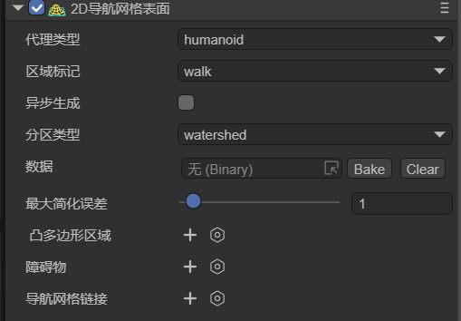
（图2-3）
分别介绍其属性：
2.1.1 代理类型agentType
Section titled “2.1.1 代理类型agentType”用于指定在该导航表面上寻路的代理类型。在寻路系统中，代理（Agent）是一个抽象的概念，用于表示寻路的主体对象，如游戏中的角色、NPC、载具等。不同类型的代理在寻路时会有不同的特性和限制，如大小、移动方式、可通过的区域类型等。代理类型的作用是让开发者能够根据游戏中不同类型的寻路对象，灵活地设置和调整局部的寻路参数，以满足游戏的需求。
默认值为Humanoid（人形角色），表示适用于人形角色的导航设置，适用于大多数游戏中的人形角色导航。
如图2-4所示，开发者可以通过选择open Agent Settings选项，打开配置界面，新增自定义的代理类型。

（图2-4）
Agents的配置页面如图2-5所示，

（图2-5）
注意，此页面并不是调节agent本身，而是调节适用该agent的地形。下面介绍其各参数的意义，
agentName：导航网格表面适用的Agent类型的名称。此处填写的名称将与代理类型处选项的名称一致，如图2-6所示。

（图2-6）
agentRadius：这个值决定了Agent在导航过程中与障碍物之间的最小距离。较大的半径会使Agent与障碍物保持更大的距离。
cellSize：导航网格的单元格大小。较小的单元格大小会生成更详细的导航网格，但会增加内存占用和计算成本。
tileSize：导航网格的瓦片大小。导航网格可以被划分为多个瓦片，以便在大型场景中更高效地生成和加载导航数据。
2.1.2 区域标记areaFlag
Section titled “2.1.2 区域标记areaFlag”用于标记当前静态导航表面的区域类型，如可行走区域、水、障碍物区域等。区域标记可以影响agent在寻路时对不同区域的偏好和避让行为。
如图2-7所示，开发者可以通过点击open Area Settings选项，打开配置界面，新增自定义的区域标记类型。

（图2-7）
Areas的配置界面如图2-8所示，

（图2-8）
name：区域类型的名称，此处填写的名称将与区域标记处选项的名称一致，如图2-9所示。
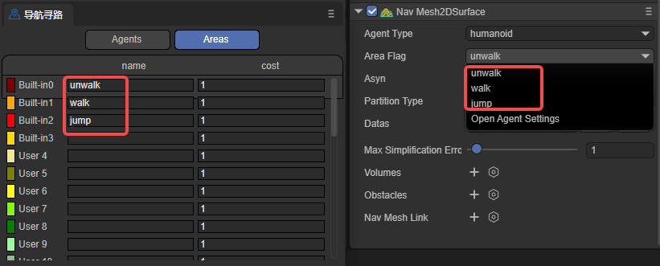
（图2-9）
cost：指定agent在导航时穿越该类型表面的相对代价或难度。通常是一个正数，较高的值表示通过该表面的代价更高或更难。例如，可以将水面的Cost设置为5，而普通地面的Cost设置为1，表示相对于普通地面，agent更难穿越水面。
总的来说，通过设置不同的areaFlag，可以控制agent在导航时如何与不同类型的表面进行交互。agent在寻路时会优先选择Cost较低的路径，避开Cost较高的表面。开发者可以根据自己的需求，为不同的表面类型设置适当的areaFlag和Cost值，以影响agent的导航行为。
2.1.3 异步生成asyn
Section titled “2.1.3 异步生成asyn”表示是否启用异步生成导航的功能。当勾选异步烘焙时，导航网格的生成过程将在后台异步进行，不会阻塞主线程的执行。启用异步生成可以保证在游戏运行的时候，每帧只生成一个tile，提高场景加载和编辑的流畅性。
2.1.4 分区类型partitionType
Section titled “2.1.4 分区类型partitionType”用于指定导航网格的分区方式，如图2-10所示，有Monotone（单调分割）、Watershed（流域分割）和Layer（层次分割）三个选项。
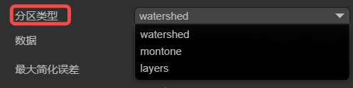
（2-10）
Monotone：使用单调多边形分区算法，创建的导航网格区域形状简单，边缘平滑，适合于简单的场景。Monotone分割的导航网格生成速度较快，占用内存相对较少。然而，对于复杂的场景，Monotone分割可能会产生不够精确的导航网格。
Watershed：与Monotone分割相比，Watershed分割的导航网格生成速度较慢，占用内存也相对较多，但Watershed分割能够更好地适应复杂的场景，生成的导航网格区域更加精确和自然，适用于对导航网格质量要求较高的场景。
Layers：适用于需要对不同区域应用不同寻路规则的场景。
2.1.5 数据datas
Section titled “2.1.5 数据datas”点击Bake按钮后，弹出烘焙面板，如图2-11所示，从层级面板中选择要烘焙的子节点（surface节点上添加了2D导航网格表面组件），拖入到烘焙面板中，按照需要选择节点进行烘焙。

（图2-11）
Active：表示该节点是否参与导航网格的生成。当勾选时，该节点的数据会被用于生成导航网格。未勾选时，该节点会被完全忽略。
Bake From：
- Graphics是从Sprite的图形数据生成导航网格。例如图2-12所示，
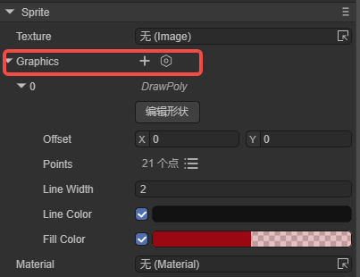
（图2-12）
- Physics是从物理碰撞器数据生成导航网格。例如图2-13所示，
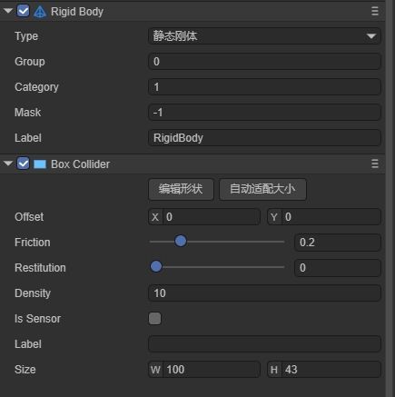
（图2-13）
- MeshRender是从网格数据生成导航网格。例如图2-14所示，

（图2-14）
- None是不使用任何现有数据。
设置好后点击右上角的烘焙按钮即可生成导航网格文件，如果需要重新选择节点，点击清理即可。
最终烘焙生成的结果（.bin文件）会保存到assets目录下新建的文件夹中（以节点所在的场景命名）。并且，烘焙好的文件会自动添加到datas属性中。
一般来说，烘焙导航网格通常在场景编辑完成后进行，以确保导航网格与最新的场景状态保持一致。如果对场景节点以及子节点的位置进行了移动，或进行了旋转等变化，都需要重新烘培节点数据（不可存在预制体中，如果在预制体中拖入场景须重新烘培数据）。因为烘焙出的导航网格并不会跟随场景动态改变。开发者可以先点击clear按钮清除原有的datas数据，然后再重新烘焙。
2.1.6 最大简化误差maxSimplificationError
Section titled “2.1.6 最大简化误差maxSimplificationError”定义了简化多边形边框时允许的最大误差值，主要用于控制导航网格简化的程度。这个值会影响导航网格的生成质量，值越大，简化程度越高，生成的导航网格更粗糙，性能更好。值越小，简化程度越低，生成的导航网格更精确，但性能消耗更大。
较大的值会减少导航网格的复杂度，提高寻路性能，因此，对于简单场景，可以使用较大的值。但值不应该设置太大，否则可能导致寻路不准确。
较小的值会保留更多细节，提高寻路精确度，因此，对于需要精确寻路的场景，建议使用较小的值。但也不要设置太小，可能会造成不必要的性能开销。
2.1.7 凸多边形区域areas
Section titled “2.1.7 凸多边形区域areas”表示导航系统中用于在某片区域内修改导航网格属性的组件。它允许在场景中定义一个区域，并且可以调整其大小、形状、位置等，并且设置后不需要重新烘焙，参数如图2-15所示。

（图2-15）
Position：设置动态区域的位置。
Scale：设置动态区域的缩放。
Rotation：设置动态区域的旋转。
AreaFlag：设置动态区域的区域标记。
Datas：设置动态区域形状的顶点位置和个数。
编辑形状：点击后，可以在场景中通过鼠标拖拽的方式编辑动态区域的形状。
开发者可以将修改区域设置为不同的区域标记（areaFlag），即为此区域设置一个不同的代价值（cost）。该代价值会影响寻路时经过该区域的代价计算。较高的代价值会使角色倾向于避开该区域，而较低的代价值则会鼓励角色通过该区域。
比如图2-16所示，代理从A点移动到B点，中间有一个动态区域，其区域标记为unwalk，表示不可走（橙色部分表示walk区域）。那么代理在寻路时，则会绕开此区域。

（图2-16）
2.1.8 障碍物obstacles
Section titled “2.1.8 障碍物obstacles”用于表示寻路过程中视为障碍物的区域。通过在场景中放置障碍物区域，以及设置障碍物的大小与形状，影响导航网格的生成和寻路计算，参数如图2-17所示。

（图2-17）
Position：设置障碍物的位置。
Scale：设置障碍物的缩放。
Rotation：设置障碍物的旋转。
AreaFlag：设置障碍物的区域标记。
MeshType：设置障碍物的类型：box、cycle、mesh。
编辑形状：点击后，可以在场景中通过鼠标拖拽的方式移动障碍物。
如图2-18所示，box类型的障碍物，不需要再次烘焙就可以改变导航网格（橙色部分为之前烘焙好的导航网格）。
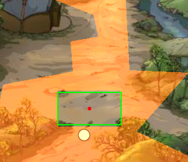
（图2-18）
2.1.9 导航网格链接navMeshLink
Section titled “2.1.9 导航网格链接navMeshLink”用于连接两个不同导航网格表面的组件。它允许在导航网格之间创建链接，通过指定移动时的起点和终点，使得角色可以在这些链接上移动，从而在不同的导航区域之间进行寻路。参数如图2-19所示，
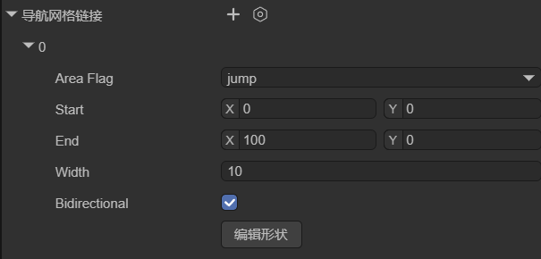
（图2-19）
AreaFlag：设置导航区域链接的区域标记。
Start：链接的起始位置，指定链接的起点所在的位置和方向，链接将从这个起点位置开始。
End：链接的结束位置，指定链接的终点所在的位置和方向，链接将在这个终点位置结束。
Width：链接的宽度，决定了链接的可通过区域的大小。
Bidirectional：是否为双向链接。如果不勾选，则链接只能单向通行，代理只能从起点到终点，不可以从终点到起点。
如图2-20所示，当代理需要从左边的区域寻路到右边的区域时，就需要用到导航区域链接组件了。
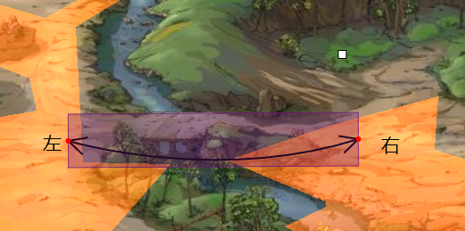
（图2-20）
2.2 生成导航区域
Section titled “2.2 生成导航区域”要在图2-1的场景中实现寻路导航，首先要根据地形生成寻路区域，以烘焙graphics区域为例，需要先使用sprite的graphics属性勾勒出地形，如图2-21所示，使用sprite将山路勾勒出来（这里只做演示，没有严格的控制边界）。
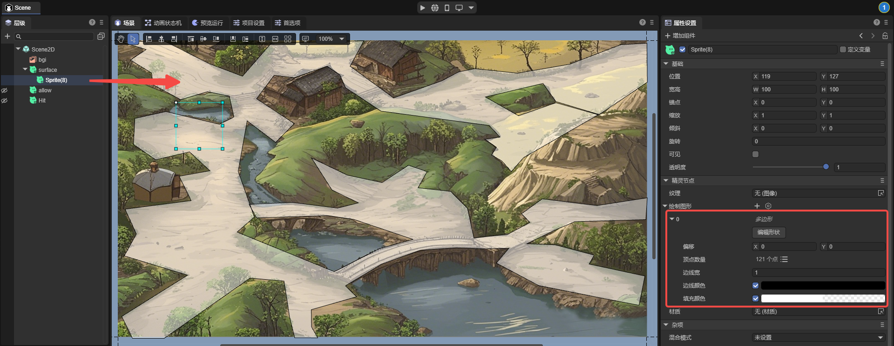
（图2-21）
节点sprite(7)的graphics与背景的大小相同，并且在节点surface上添加了2D导航网格表面组件，区域标记设置为walk，烘焙时的设置如图2-22所示，
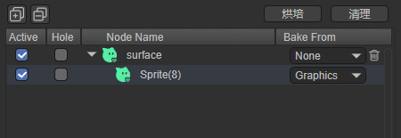
（图2-22）
最终烘焙的效果如图2-23所示，就是全部的可通行区域。

（图2-23）
三、2D导航代理
Section titled “三、2D导航代理”导航代理是导航系统中用于控制角色或物体等寻路对象，在导航网格上移动和寻路的组件。它是寻路对象与导航系统交互的主要组件，负责处理寻路对象的移动、避障和路径规划。该组件是实现寻路对象在复杂环境中自主寻路和移动的关键。
导航代理只有圆形，这样可以简化计算，将复杂的形状大大简化。并且，圆形没有尖锐的边角，使得代理在环境中移动时更加平滑，不容易被卡住或跨越过小的障碍物。
3.1 组件属性
Section titled “3.1 组件属性”在场景中创建一个节点，为其添加2D导航代理组件，如图3-1所示，

（图3-1）
选定代理类型后，开发者可以调节该导航代理的一些属性：
| 中文属性名 | 英文属性名 | 属性解释 |
|---|---|---|
| 半径 | Radius | 设置代理的碰撞半径。决定了代理在导航网格上的占用区域，并影响其与障碍物的碰撞检测。 |
| 速度 | Speed | 设置代理的最大移动速度。较大的速度可以让代理更快地到达目标点。 |
| 最大加速度 | Max Acceleration | 设置代理的最大加速度。这决定了代理在开始移动、停止移动或改变方向时的加速度。 |
| 规避品质级别 | Quality | 定义代理的回避品质。影响代理在导航网格上计算路径的精度和效率，较高的质量可以生成更准确和优化的路径，但可能会增加计算开销。 |
| 规避优先级别 | Priority | 设置代理的规避优先级。较高的优先级可以让代理在寻路和避障时获得更高的优先权。数值越小优先级越高。 |
| 导航区域类型 | Area Mask | 设置代理可以通过的导航区域类型。可以限制代理只在特定类型的区域内移动。 |
3.2 角色寻路
Section titled “3.2 角色寻路”可以先在场景中创建一个Sprite节点（Hit），绘制图形用于显示鼠标点击的位置。用另一个Sprite节点（allow），绘制图形表示寻路的角色，如图3-2所示，
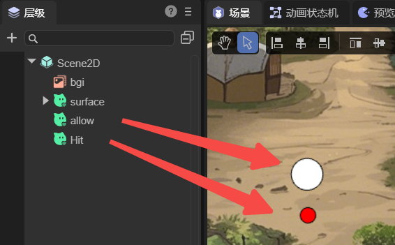
（图3-2）
在图2-21的surface节点上创建一个自定义的组件脚本：
import Sprite = Laya.Sprite;import Component = Laya.Component;import Nav2DAgent = Laya.Nav2DAgent;
const { regClass, property } = Laya;
@regClass()export class TestSprite extends Laya.Script {
// 用于显示鼠标点击的位置 @property({ type: Laya.Sprite }) public hit: Sprite;
private _temp: Sprite; private _allAgent: Nav2DAgent[] = [];
private findCompents(lists: any[], sprite: Sprite, componentType: typeof Component) { let comp = sprite.getComponent(componentType); if (comp != null) { lists.push(comp); } for (var i = 0; i < sprite.numChildren; i++) { let child = sprite.getChildAt(i) as Sprite; this.findCompents(lists, child, componentType); } }
//组件被激活后执行，此时所有节点和组件均已创建完毕，此方法只执行一次 onAwake(): void { let sprite = this.owner as Laya.Sprite; //sprite.cache = true; this._temp = new Laya.Sprite(); this.owner.scene.addChild(this._temp); this.findCompents(this._allAgent, sprite.scene, Nav2DAgent); }
onMouseClick(evt: Laya.Event): void { let pos = new Laya.Vector2(evt.stageX, evt.stageY); console.log("click", pos); this._temp.graphics.clear(); this._allAgent.forEach((agent) => { agent.destination = pos; let paths = agent.getCurrentPath(); if (paths.length >= 2) { let points: any = [] paths.forEach((point) => { points.push(point.pos.x, point.pos.z); }); this._temp.graphics.drawLines(0, 0, points, "#00000030", 5); }
}) this.hit.pos(pos.x, pos.y); }}这样，鼠标点击的位置就是终点，角色会自动规避障碍到达终点，效果如动图3-3所示，
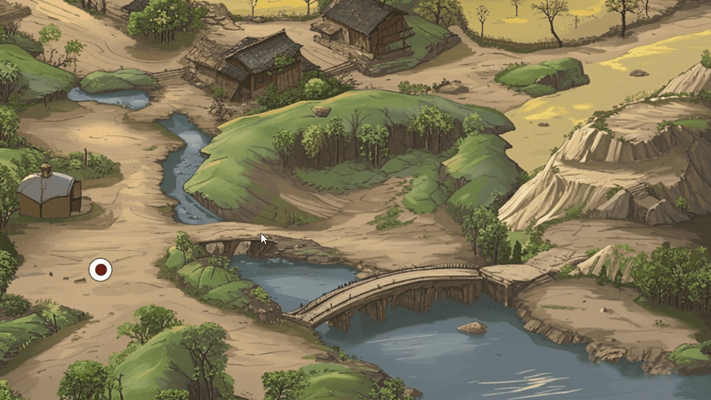
（动图3-2）